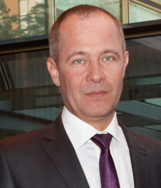

Кочерба Сергей Викторович

- Адрес: Одесса, пр-т Ак.Глушко, дом 11\1 кв.7
- Телефоны
- Домашний: +38(0482)42-58-34
- Рабочий: +38(048)746-68-34
- Мобильный: +38(067)481-33-74
- E-mail: kiparis@te.net.ua
- Дата рождения: 24 Октября 1970 года
- Место рождения: Украина, Одесса
- Семейный статус: разведен
- Дети: сын Никита, 22 года
- Водительские права: категория В
Образование
1985 - 1989: Одесский техникум промышленной автоматики
Факультет: Автоматизация производства
1991 - 1996: Одесский институт народного хозяйства
Факультет: Маркетинг средств производства
2011 - 2015: Южно-Украинский педагогический университет им.К.Д. Ушинского
Факультет: Художественно-графический
Опыт работы
1991 - 1994: Одесское трикотажное объединение им. Н.К. Крупской
Должность: Товаровед отдела снабжения
1994 - по настоящее время: Фирма "Кипарис" в виде ООО
Должность: Директор